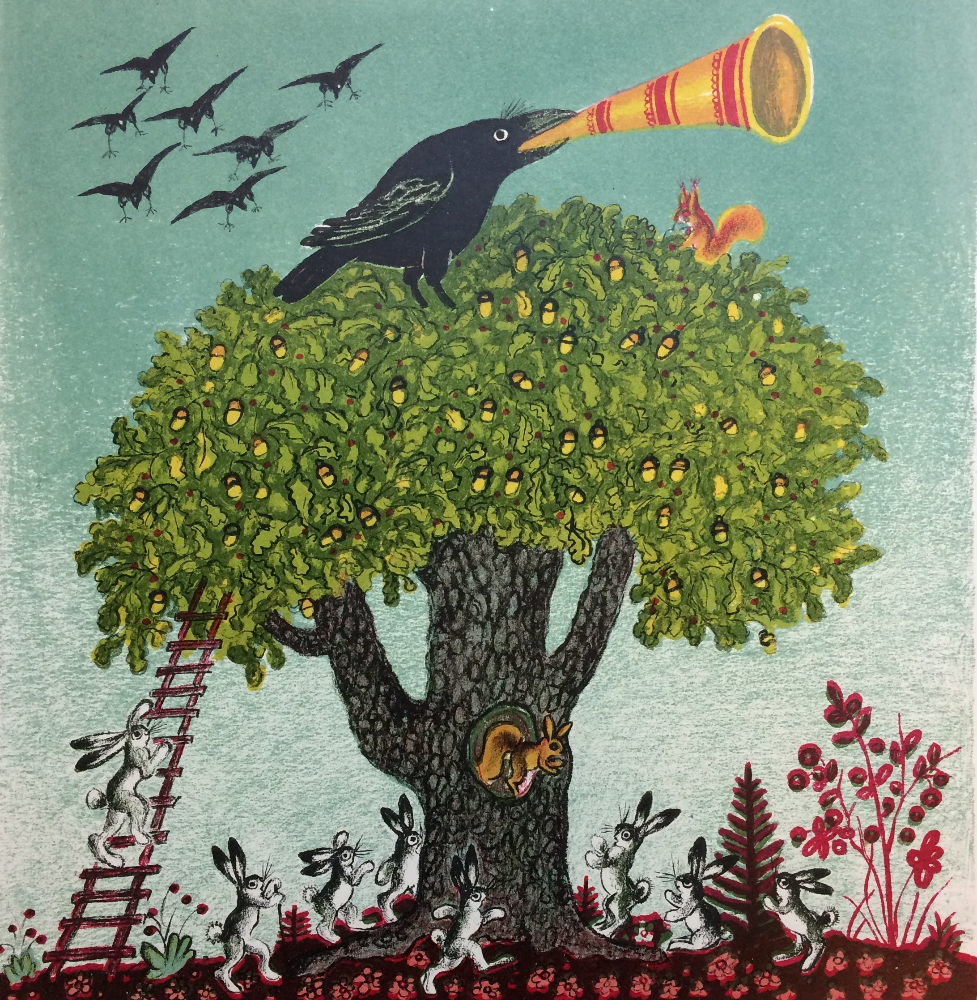
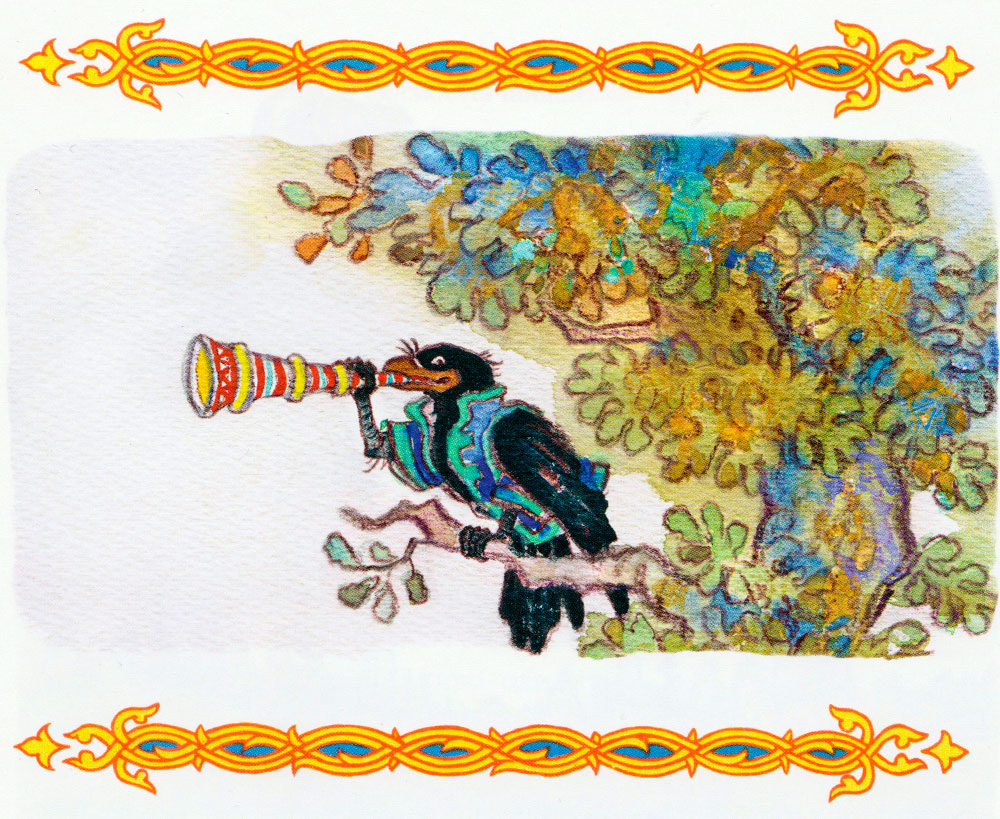
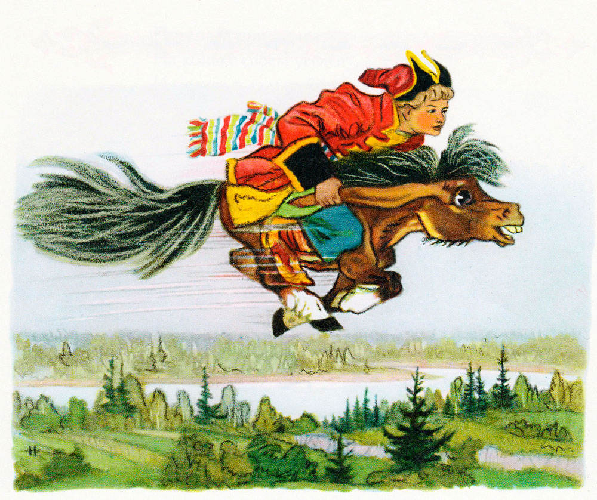
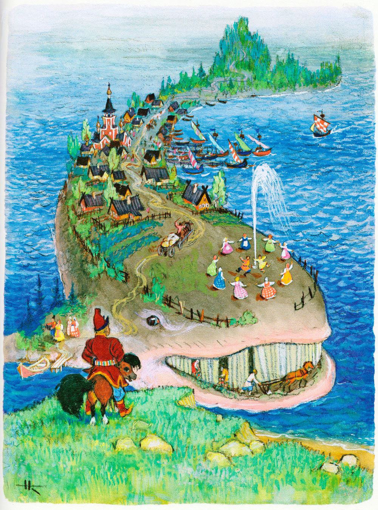
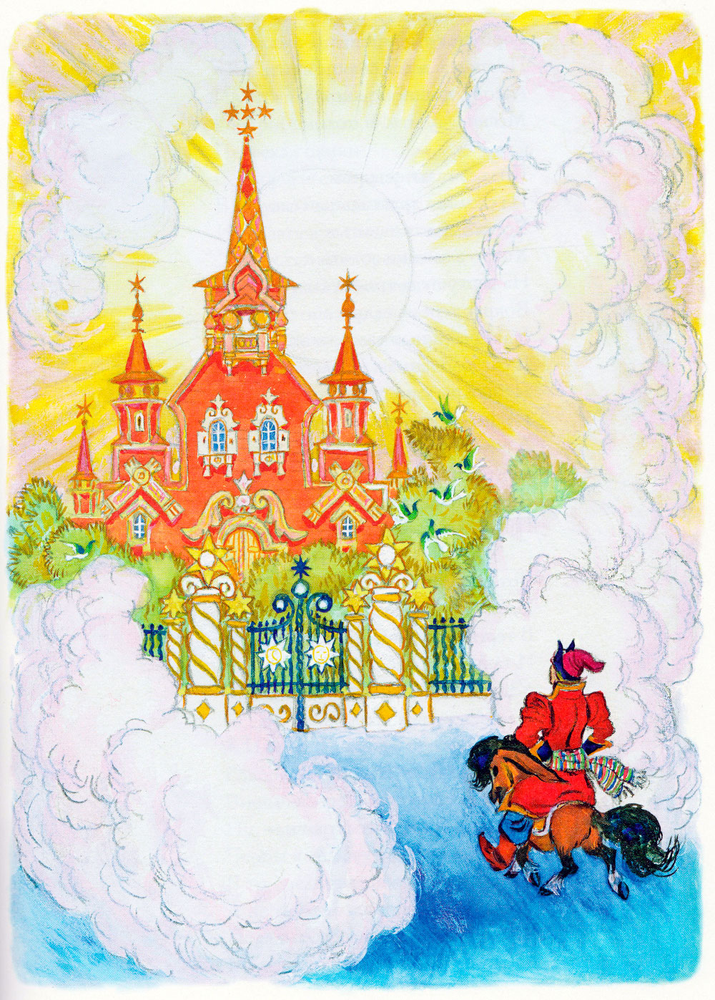
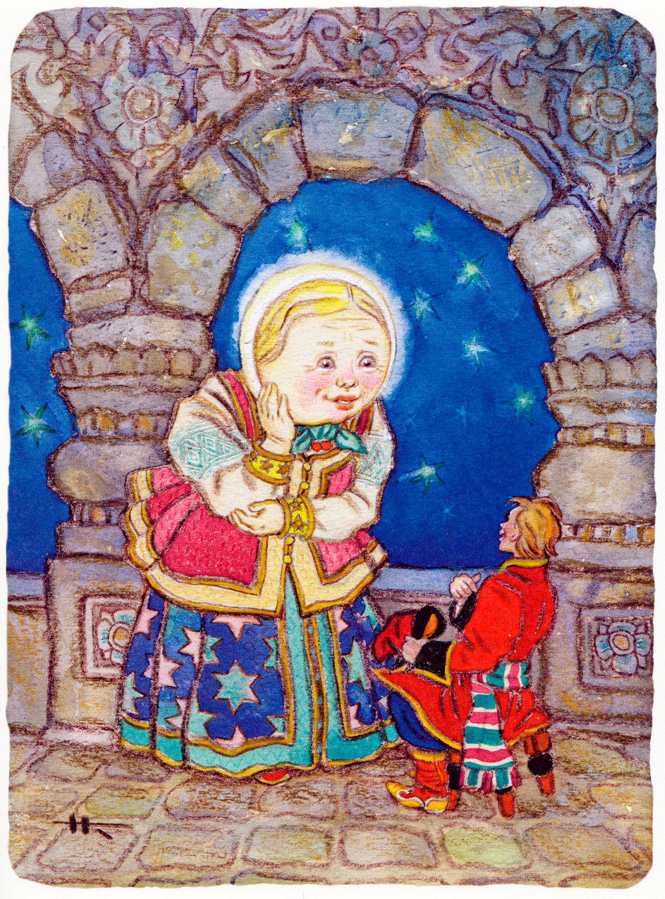
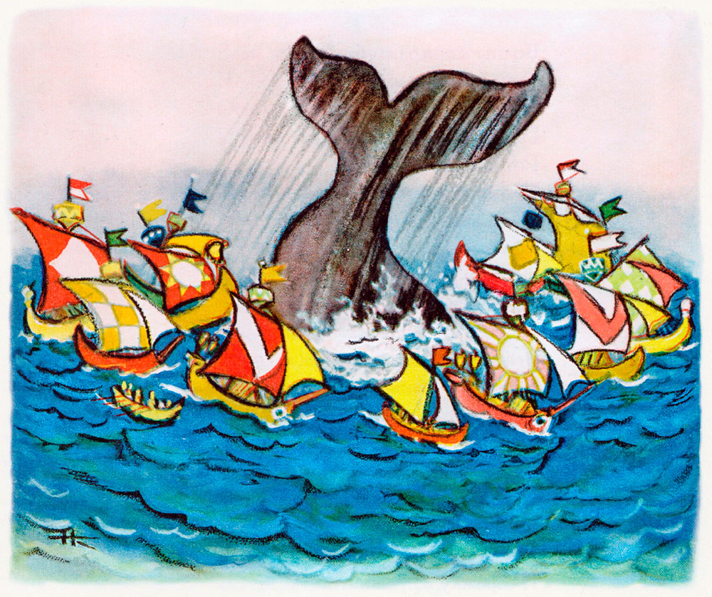
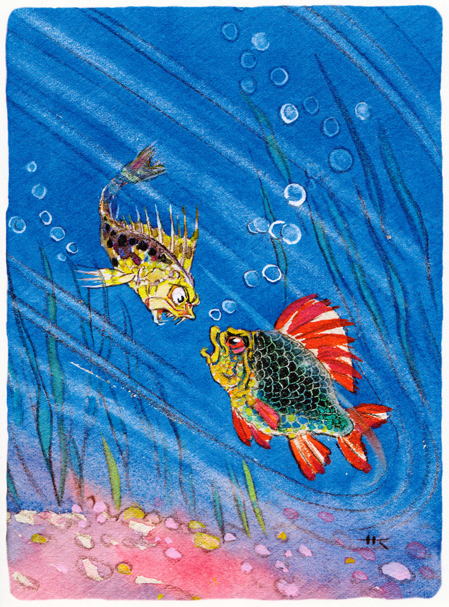
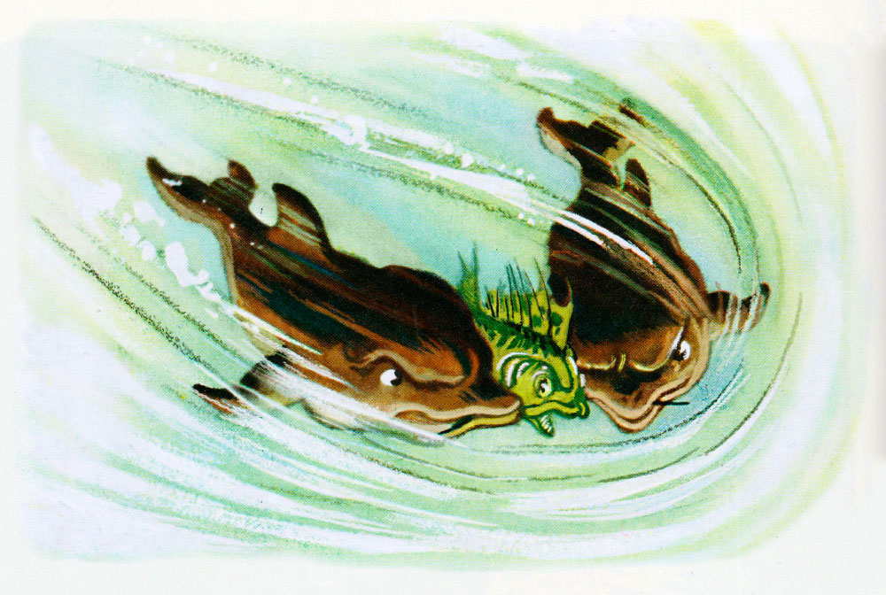

Конёк-горбунок. Часть 3.
Петр Ершов
Часть 3. Доселева Макар огороды копал, а нынче Макар в воеводы попал.
Та-ра-рали, та-ра-ра!
Вышли кони со двора;
Вот крестьяне их поймали
Да покрепче привязали.
Сидит ворон на дубу,
Он играет во трубу;

Как во трубушку играет,
Православных потешает:
"Эй, послушай, люд честной!
Жили-были муж с женой;
Муж-то примется за шутки,
А жена за прибаутки,
И пойдет у них тут пир,
Что на весь крещеный мир!"
Это присказка ведется,
Сказка послее начнется.
Как у наших у ворот
Муха песенку поет:
"Что дадите мне за вестку?
Бьет свекровь свою невестку:
Посадила на шесток,
Привязала за шнурок,
Ручки к ножкам притянула,
Ножку правую разула:
"Не ходи ты по зарям!
Не кажися молодцам!"
Это присказка велася,
Вот и сказка началася.
Ну-с, так едет наш Иван
За кольцом на окиян.
Горбунок летит, как ветер,
И в почин на первый вечер
Верст сто тысяч отмахал
И нигде не отдыхал.

Подъезжая к окияну,
Говорит конек Ивану:
"Ну, Иванушка, смотри,
Вот минутки через три
Мы приедем на поляну -
Прямо к морю-окияну;
Поперек его лежит
Чудо-юдо рыба-кит;
Десять лет уж он страдает,
А доселева не знает,
Чем прощенье получить;
Он учнет тебя просить,
Чтоб ты в солнцевом селенье
Попросил ему прощенье;
Ты исполнить обещай,
Да, смотри ж, не забывай!"

Вот въезжают на поляну
Прямо к морю-окияну;
Поперек его лежит
Чудо-юдо рыба-кит.
Все бока его изрыты,
Частоколы в ребра вбиты,
На хвосте сыр-бор шумит,
На спине село стоит;
Мужички на губе пашут,
Между глаз мальчишки пляшут,
А в дубраве, меж усов,
Ищут девушки грибов.
Вот конек бежит по киту,
По костям стучит копытом.
Чудо-юдо рыба-кит
Так проезжим говорит,
Рот широкий отворяя,
Тяжко, горько воздыхая:
"Путь-дорога, господа!
Вы откуда, и куда?" -
"Мы послы от Царь-девицы,
Едем оба из столицы, -
Говорит киту конек, -
К солнцу прямо на восток,
Во хоромы золотые". -
"Так нельзя ль, отцы родные,
Вам у солнышка спросить:
Долго ль мне в опале быть,
И за кои прегрешенья
Я терплю беды-мученья?" -
"Ладно, ладно, рыба-кит!" -
Наш Иван ему кричит.
"Будь отец мне милосердный!
Вишь, как мучуся я, бедный!
Десять лет уж тут лежу...
Я и сам те услужу!.." -
Кит Ивана умоляет,
Сам же горько воздыхает.
"Ладно-ладно, рыба-кит!" -
Наш Иван ему кричит.
Тут конек под ним забился,
Прыг на берег - и пустился,
Только видно, как песок
Вьется вихорем у ног.
Едут близко ли, далеко,
Едут низко ли, высоко
И увидели ль кого -
Я не знаю ничего.
Скоро сказка говорится,
Дело мешкотно творится.
Только, братцы, я узнал,
Что конек туда вбежал,
Где (я слышал стороною)
Небо сходится с землею,
Где крестьянки лен прядут,
Прялки на небо кладут.
Тут Иван с землей простился
И на небе очутился
И поехал, будто князь,
Шапка набок, подбодрясь.
"Эко диво! эко диво!
Наше царство хоть красиво, -
Говорит коньку Иван.
Средь лазоревых полян, -
А как с небом-то сравнится,
Так под стельку не годится.
Что земля-то!.. ведь она
И черна-то и грязна;
Здесь земля-то голубая,
А уж светлая какая!..
Посмотри-ка, горбунок,
Видишь, вон где, на восток,
Словно светится зарница...
Чай, небесная светлица...
Что-то больно высока!" -
Так спросил Иван конька.
"Это терем Царь-девицы,
Нашей будущей царицы, -
Горбунок ему кричит, -
По ночам здесь солнце спит,
А полуденной порою
Месяц входит для покою".

Подъезжают; у ворот
Из столбов хрустальный свод;
Все столбы те завитые
Хитро в змейки золотые;
На верхушках три звезды,
Вокруг терема сады;
На серебряных там ветках
В раззолоченных во клетках
Птицы райские живут,
Песни царские поют.
А ведь терем с теремами
Будто город с деревнями;
А на тереме из звезд -
Православный русский крест.
Вот конек во двор въезжает;
Наш Иван с него слезает,
В терем к Месяцу идет
И такую речь ведет:
"Здравствуй, Месяц Месяцович!
Я - Иванушка Петрович,
Из далеких я сторон
И привез тебе поклон". -
"Сядь, Иванушка Петрович, -
Молвил Месяц Месяцович, -
И поведай мне вину
В нашу светлую страну
Твоего с земли прихода;
Из какого ты народа,
Как попал ты в этот край, -
Все скажи мне, не утаи", -

"Я с земли пришел Землянской,
Из страны ведь христианской, -
Говорит, садясь, Иван, -
Переехал окиян
С порученьем от царицы -
В светлый терем поклониться
И сказать вот так, постой:
"Ты скажи моей родной:
Дочь ее узнать желает,
Для чего она скрывает
По три ночи, по три дня
Лик какой-то от меня;
И зачем мой братец красный
Завернулся в мрак ненастный
И в туманной вышине
Не пошлет луча ко мне?"
Так, кажися? - Мастерица
Говорить красно царица;
Не припомнишь все сполна,
Что сказала мне она". -
"А какая то царица?" -
"Это, знаешь, Царь-девица". -
"Царь-девица?.. Так она,
Что ль, тобой увезена?" -
Вскрикнул Месяц Месяцович.
А Иванушка Петрович
Говорит: "Известно, мной!
Вишь, я царский стремянной;
Ну, так царь меня отправил,
Чтобы я ее доставил
В три недели во дворец;
А не то меня, отец,
Посадить грозился на кол".
Месяц с радости заплакал,
Ну Ивана обнимать,
Целовать и миловать.
"Ах, Иванушка Петрович! -
Молвил Месяц Месяцович. -
Ты принес такую весть,
Что не знаю, чем и счесть!
А уж мы как горевали,
Что царевну потеряли!..
Оттого-то, видишь, я
По три ночи, по три дня
В темном облаке ходила,
Все грустила да грустила,
Трое суток не спала.
Крошки хлеба не брала,
Оттого-то сын мой красный
Завернулся в мрак ненастный,
Луч свой жаркий погасил,
Миру божью не светил:
Все грустил, вишь, по сестрице,
Той ли красной Царь-девице.
Что, здорова ли она?
Не грустна ли, не больна?" -
"Всем бы, кажется, красотка,
Да у ней, кажись, сухотка:
Ну, как спичка, слышь, тонка,
Чай, в обхват-то три вершка;
Вот как замуж-то поспеет,
Так небось и потолстеет:
Царь, слышь, женится на ней".
Месяц вскрикнул: "Ах, злодей!
Вздумал в семьдесят жениться
На молоденькой девице!
Да стою я крепко в том -
Просидит он женихом!
Вишь, что старый хрен затеял:
Хочет жать там, где не сеял!
Полно, лаком больно стал!"
Тут Иван опять сказал:
"Есть еще к тебе прошенье,
То о китовом прощенье...
Есть, вишь, море; чудо-кит
Поперек его лежит:
Все бока его изрыты,
Частоколы в ребра вбиты...
Он, бедняк, меня прошал,
Чтобы я тебя спрошал:
Скоро ль кончится мученье?
Чем сыскать ему прощенье?
И на что он тут лежит?"
Месяц ясный говорит:
"Он за то несет мученье,
Что без божия веленья
Проглотил среди морей
Три десятка кораблей.
Если даст он им свободу,
Снимет бог с него невзгоду,
Вмиг все раны заживит,
Долгим веком наградит".
Тут Иванушка поднялся,
С светлым месяцем прощался,
Крепко шею обнимал,
Трижды в щеки целовал.
"Ну, Иванушка Петрович! -
Молвил Месяц Месяцович. -
Благодарствую тебя
За сынка и за себя.
Отнеси благословенье
Нашей дочке в утешенье
И скажи моей родной:
"Мать твоя всегда с тобой;
Полно плакать и крушиться:
Скоро грусть твоя решится, -
И не старый, с бородой,
А красавец молодой
Поведет тебя к налою".
Ну, прощай же! Бог с тобою!"
Поклонившись, как умел,
На конька Иван тут сел,
Свистнул, будто витязь знатный,
И пустился в путь обратный.
На другой день наш Иван
Вновь пришел на окиян.
Вот конек бежит по киту,
По костям стучит копытом.
Чудо-юдо рыба-кит
Так, вздохнувши, говорит:
"Что, отцы, мое прошенье?
Получу ль когда прощенье?" -
"Погоди ты, рыба-кит!" -
Тут конек ему кричит.
Вот в село он прибегает,
Мужиков к себе сзывает,
Черной гривкою трясет
И такую речь ведет:
"Эй, послушайте, миряне,
Православны христиане!
Коль не хочет кто из вас
К водяному сесть в приказ,
Убирайся вмиг отсюда.
Здесь тотчас случится чудо:
Море сильно закипит,
Повернется рыба-кит..."
Тут крестьяне и миряне,
Православны христиане,
Закричали: "Быть бедам!"
И пустились по домам.
Все телеги собирали;
В них, не мешкая, поклали
Все, что было живота,
И оставили кита.
Утро с полднем повстречалось,
А в селе уж не осталось
Ни одной души живой,
Словно шел Мамай войной!
Тут конек на хвост вбегает,
К перьям близко прилегает
И что мочи есть кричит:
"Чудо-юдо рыба-кит!
Оттого твои мученья,
Что без божия веленья
Проглотил ты средь морей
Три десятка кораблей.
Если дашь ты им свободу,
Снимет бог с тебя невзгоду,
Вмиг все раны заживит,
Долгим веком наградит".
И, окончив речь такую,
Закусил узду стальную,
Понатужился - и вмиг
На далекий берег прыг.

Чудо-кит зашевелился,
Словно холм поворотился,
Начал море волновать
И из челюстей бросать
Корабли за кораблями
С парусами и гребцами.
Тут поднялся шум такой,
Что проснулся царь морской:
В пушки медные палили,
В трубы кованы трубили;
Белый парус поднялся,
Флаг на мачте развился;
Поп с причетом всем служебным
Пел на палубе молебны;
А гребцов веселый ряд
Грянул песню наподхват:
"Как по моречку, по морю,
По широкому раздолью,
Что по самый край земли,
Выбегают корабли..."
Волны моря заклубились,
Корабли из глаз сокрылись.
Чудо-юдо рыба-кит
Громким голосом кричит,
Рот широкий отворяя,
Плесом волны разбивая:
"Чем вам, други, услужить?
Чем за службу наградить?
Надо ль раковин цветистых?
Надо ль рыбок золотистых?
Надо ль крупных жемчугов?
Все достать для вас готов!" -
"Нет, кит-рыба, нам в награду
Ничего того не надо, -
Говорит ему Иван, -
Лучше перстень нам достань -
Перстень, знаешь, Царь-девицы,
Нашей будущей царицы". -
"Ладно, ладно! Для дружка
И сережку из ушка!
Отыщу я до зарницы
Перстень красной Царь-девицы",-
Кит Ивану отвечал
И, как ключ, на дно упал.
Вот он плесом ударяет,
Громким голосом сзывает
Осетриный весь народ
И такую речь ведет:
"Вы достаньте до зарницы
Перстень красной Царь-девицы,
Скрытый в ящичке на дне.
Кто его доставит мне,
Награжу того я чином:
Будет думным дворянином.
Если ж умный мой приказ
Не исполните... я вас!"
Осетры тут поклонились
И в порядке удалились.
Через несколько часов
Двое белых осетров
К киту медленно подплыли
И смиренно говорили:
"Царь великий! не гневись!
Мы все море уж, кажись,
Исходили и изрыли,
Но и знаку не открыли.
Только ерш один из нас
Совершил бы твой приказ:
Он по всем морям гуляет,
Так уж, верно, перстень знает;
Но его, как бы назло,
Уж куда-то унесло".-
"Отыскать его в минуту
И послать в мою каюту!" -
Кит сердито закричал
И усами закачал.
Осетры тут поклонились,
В земский суд бежать пустились
И велели в тот же час
От кита писать указ,
Чтоб гонцов скорей послали
И ерша того поймали.
Лещ, услыша сей приказ,
Именной писал указ;
Сом (советником он звался)
Под указом подписался;
Черный рак указ сложил
И печати приложил.
Двух дельфинов тут призвали
И, отдав указ, сказали,
Чтоб, от имени царя,
Обежали все моря
И того ерша-гуляку,
Крикуна и забияку,
Где бы ни было нашли,
К государю привели.
Тут дельфины поклонились
И ерша искать пустились.
Ищут час они в морях,
Ищут час они в реках,
Все озера исходили,
Все проливы переплыли,
Не могли ерша сыскать
И вернулися назад,
Чуть не плача от печали...
Вдруг дельфины услыхали
Где-то в маленьком пруде
Крик неслыханный в воде.
В пруд дельфины завернули
И на дно его нырнули, -
Глядь: в пруде, под камышом,
Ерш дерется с карасем.

"Смирно! черти б вас побрали!
Вишь, содом какой подняли,
Словно важные бойцы!" -
Закричали им гонцы.
"Ну, а вам какое дело? -
Ёрш кричит дельфинам смело. -
Я шутить ведь не люблю,
Разом всех переколю!" -
"Ох ты, вечная гуляка
И крикун и забияка!
Все бы, дрянь, тебе гулять,
Все бы драться да кричать.
Дома - нет ведь, не сидится!..
Ну да что с тобой рядиться, -
Вот тебе царев указ,
Чтоб ты плыл к нему тотчас".

Тут проказника дельфины
Подхватили за щетины
И отправились назад.
Ерш ну рваться и кричать:
"Будьте милостивы, братцы!
Дайте чуточку подраться.
Распроклятый тот карась
Поносил меня вчерась
При честном при всем собранье
Неподобной разной бранью..."
Долго ерш еще кричал,
Наконец и замолчал;
А проказника дельфины
Все тащили за щетины,
Ничего не говоря,
И явились пред царя.
"Что ты долго не являлся?
Где ты, вражий сын, шатался?"
Кит со гневом закричал.
На колени ерш упал,
И, признавшись в преступленье,
Он молился о прощенье.
"Ну, уж бог тебя простит! -
Кит державный говорит. -
Но за то твое прощенье
Ты исполни повеленье". -
"Рад стараться, чудо-кит!" -
На коленях ерш пищит.
"Ты по всем морям гуляешь,
Так уж, верно, перстень знаешь
Царь-девицы?" - "Как не знать!
Можем разом отыскать". -
"Так ступай же поскорее
Да сыщи его живее!"
Тут, отдав царю поклон,
Ерш пошел, согнувшись, вон.
С царской дворней побранился,
За плотвой поволочился
И салакушкам шести
Нос разбил он на пути.
Совершив такое дело,
В омут кинулся он смело
И в подводной глубине
Вырыл ящичек на дне -
Пуд по крайней мере во сто.
"О, здесь дело-то не просто!"
И давай из всех морей
Ерш скликать к себе сельдей.
Сельди духом собралися,
Сундучок тащить взялися,
Только слышно и всего -
"У-у-у!" да "о-о-о!"
Но сколь сильно ни кричали,
Животы лишь надорвали,
А проклятый сундучок
Не дался и на вершок.
"Настоящие селедки!
Вам кнута бы вместо водки!" -
Крикнул ерш со всех сердцов
И нырнул по осетров.
Осетры тут приплывают
И без крика подымают
Крепко ввязнувший в песок
С перстнем красный сундучок.
"Ну, ребятушки, смотрите,
Вы к царю теперь плывите,
Я ж пойду теперь ко дну
Да немножко отдохну:
Что-то сон одолевает,
Так глаза вот и смыкает..."
Осетры к царю плывут,
Ерш-гуляка прямо в пруд
(Из которого дельфины
Утащили за щетины),
Чай, додраться с карасем, -
Я не ведаю о том.
Но теперь мы с ним простимся
И к Ивану возвратимся.
Тихо море-окиян.
На песке сидит Иван,
Ждет кита из синя моря
И мурлыкает от горя;
Повалившись на песок,
Дремлет верный горбунок.
Время к вечеру клонилось;
Вот уж солнышко спустилось;
Тихим пламенем горя,
Развернулася заря.
А кита не тут-то было.
"Чтоб те, вора, задавило!
Вишь, какой морской шайтан! -
Говорит себе Иван. -
Обещался до зарницы
Вынесть перстень Царь-девицы,
А доселе не сыскал,
Окаянный зубоскал!
А уж солнышко-то село,
И..." Тут море закипело:
Появился чудо-кит
И к Ивану говорит:
"За твое благодеянье
Я исполнил обещанье".
С этим словом сундучок
Брякнул плотно на песок,
Только берег закачался.
"Ну, теперь я расквитался.
Если ж вновь принужусь я,
Позови опять меня;
Твоего благодеянья
Не забыть мне... До свиданья!"
Тут кит-чудо замолчал
И, всплеснув, на дно упал.
Продолжение следует